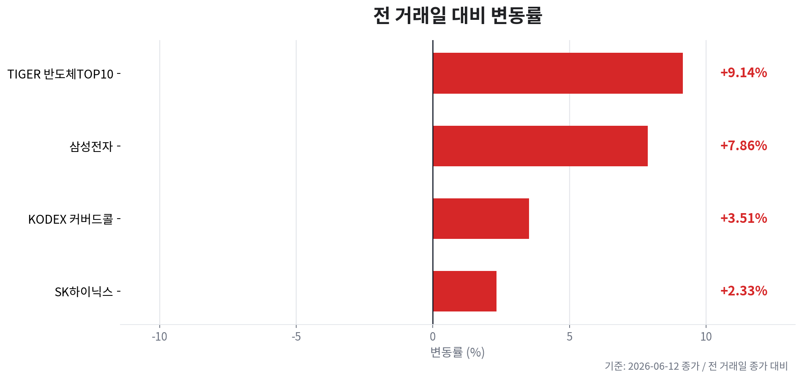

TIGER 반도체TOP10
오늘자 뉴스 0건
| 종목 | 티커 | 기준 가격 | 전 거래일 종가 | 등락 | 변동률 |
|---|---|---|---|---|---|
| TIGER 반도체TOP10 | 396500 | 53,000원 | 48,560원 | +4,440원 | +9.14% |
| KODEX 200타겟위클리커버드콜 | 498400 | 25,050원 | 24,200원 | +850원 | +3.51% |
| 삼성전자 | 005930 | 322,500원 | 299,000원 | +23,500원 | +7.86% |
| SK하이닉스 | 000660 | 2,150,000원 | 2,101,000원 | +49,000원 | +2.33% |



오늘의 핵심은 HBM 수요 지속과 급등 이후 수급 검증입니다. 직전 거래일 기준 KOSPI는 8,123.62(+4.63%)로 크게 반등했고, 삼성전자 322,500원(+7.86%), SK하이닉스 2,150,000원(+2.33%), TIGER 반도체TOP10 53,000원(+9.14%)이 동반 상승했습니다.
주말 뉴스 흐름은 엔비디아 대항 독자 AI칩 시장 확대 전망, HBM 공급망의 구조적 수요, 삼성전자·SK하이닉스의 첨단 D램·HBM 장비 구매 확대, 2026년 한국 반도체 장비 투자 세계 2위 전망으로 요약됩니다. 다만 중국 CXMT의 자금조달·증설 가능성, 미·중 AI칩 규제, 미국 금리 고착은 사이클 후반부 리스크입니다.
현재 메모리 사이클은 공급 부족 → 가격 상승 → 실적 개선 → 주가 상승이 확인되는 호황 중반 이후입니다. HBM은 고객 인증, 선단 패키징, 생산 전환의 병목 때문에 범용 DRAM보다 공급 탄력성이 낮아 선두 업체의 가격·마진 프리미엄을 지지합니다.
| 변수 | 오늘의 해석 | 투자 시사점 |
|---|---|---|
| DRAM/HBM | AI 서버와 독자 AI칩 확산 전망이 HBM 수요 기대를 재강화 | SK하이닉스는 순도 프리미엄 유지, 삼성전자는 HBM 인증·수율 개선 속도 확인 필요 |
| NAND/SSD | AI 서버용 SSD와 고용량 스토리지 수요 기대가 삼성전자 회복 논리를 보강 | NAND는 DRAM보다 회복 강도 확인이 필요하므로 가격 반등 확산 여부 추적 |
| CAPEX | 첨단 D램·HBM 장비 구매 확대와 2026년 투자 증가 전망이 동시 확인 | 단기에는 장비·소재 체인에 호재이나 중기에는 공급 과잉 전환 리스크로 관리 |
PER 관점에서는 호황기 이익 급증으로 밸류에이션이 싸 보일 수 있습니다. 따라서 단순 저PER보다 PBR 위치, 다음 분기 이익 증가율 둔화 여부, CAPEX 확대 속도를 함께 확인해야 합니다.
| 구분 | 삼성전자 | SK하이닉스 |
|---|---|---|
| 주가 흐름 | 직전 거래일 +7.86% 급등, HBM 추격과 AI SSD 기대 반영 | 직전 거래일 +2.33%, 고가권에서 HBM 선도주 프리미엄 지속 |
| 이익 순도 | 메모리·파운드리·모바일이 섞인 복합 회복형 | AI 서버용 HBM·DRAM 민감도가 높아 메모리 사이클 순도 우위 |
| 체크포인트 | HBM 고객 인증, 파운드리 손익 개선, NAND 가격 반등 | HBM 가격 유지, 고객 집중도, 고점권 차익실현 압력 |
SK하이닉스는 HBM 선도 지위와 실적 순도가 강점이지만 이미 프리미엄이 주가에 반영되어 있어 신규 진입은 눌림과 거래대금 재확인을 요구합니다. 삼성전자는 HBM 후발 모멘텀과 NAND·SSD 회복 기대가 붙으면 탄력은 커질 수 있으나, 실제 고객 승인과 수율 뉴스가 확인되어야 프리미엄 재평가가 지속됩니다.
원/달러는 1,517.89원으로 직전일 대비 하락해 외국인 수급에는 우호적이었습니다. 미국 10년물은 4.487%, 30년물은 4.975%로 높은 수준을 유지해 성장주 밸류에이션 상단을 제한합니다. WTI는 84.88달러로 전일 대비 하락했으나 여전히 높은 레벨이라 지정학 뉴스와 인플레이션 기대에 민감합니다.
오늘자 뉴스 0건
오늘자 뉴스 0건
이 파일은 자동 생성 결과입니다. 투자 판단 전 원문 뉴스와 실시간 호가를 다시 확인하세요.